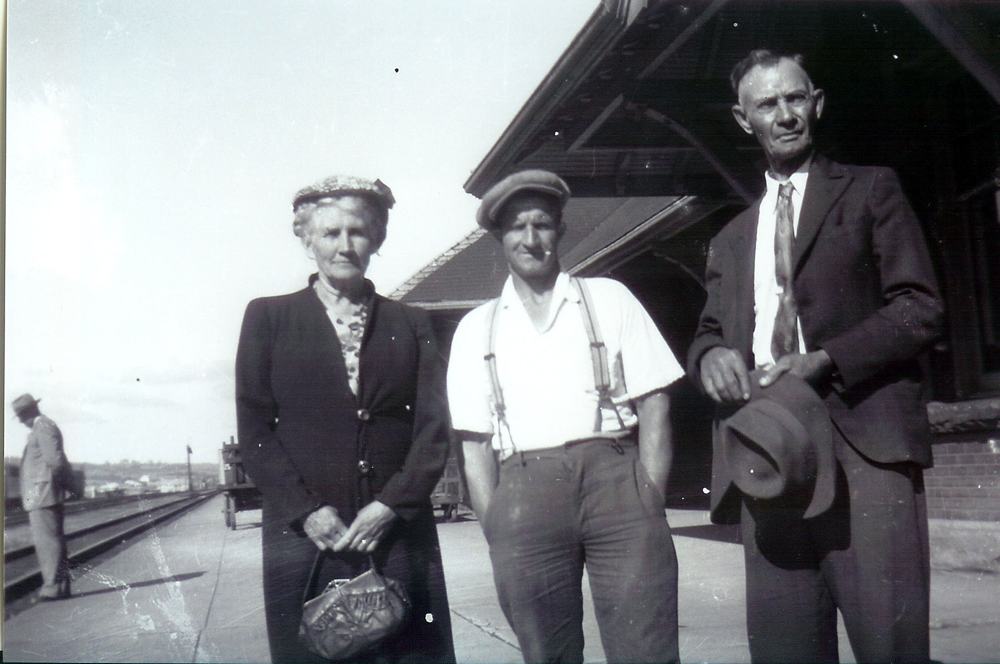
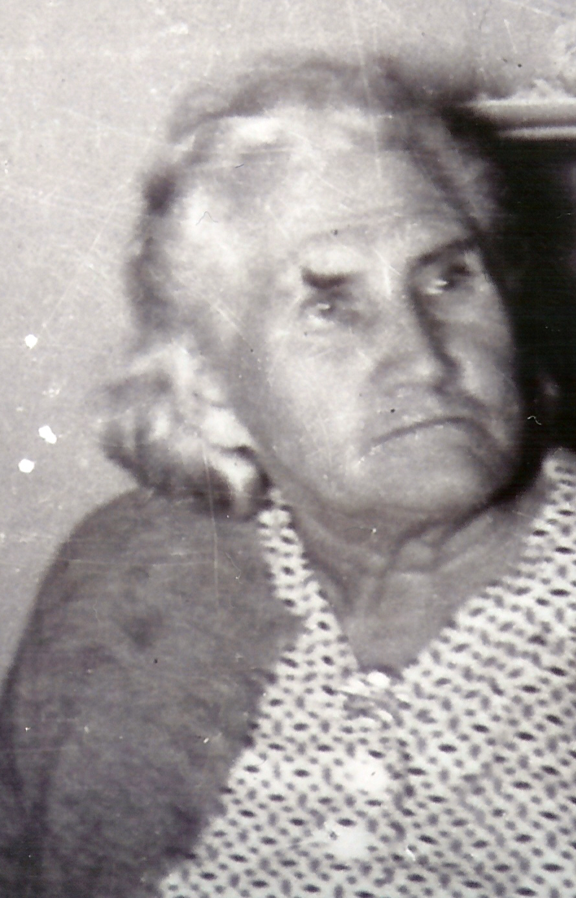
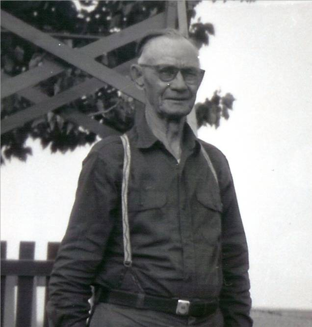

The Family Chronicle
No. 105 October 16 , 2005
____________________________________________________________________



Follow-up
A recent note form Walt Berry, a grandson of Maude (Glendenning) and James Cormier included the photos on the left. The top photo shows Aunt Maude and Uncle Jim Cormier with their son-in-law, James Berry, Walt’s father. The second photo is of Aunt Maude and the last of Uncle Jim.
Walt’s note also included the following:
“I have enjoyed reading through the entire series of the chronicle. I do remember some of the names / places mentioned – especially in my grandmother’s family (Maude Glendenning). My grandmother died in 1956 when I was only 12 years old but I do remember her. I had visited the family farm many years ago and remember Grandfather Jim Cormier sitting in his chair in the front veranda – smoking his pipe full of Prince Albert. Uncle Sanford and Aunt Sadie (Jagoe) lived on the farm at the time.
I can even remember people in Hamilton buying the wooden barrels to make “swish”. In the one chronicle you speak of working on the farm and stooking the wheat – a scene I still see often as I live in an area where there are many Mennonite / Amish farmers. They do many chores which are labour intensive – many are still old order and
many live without the conveniences of modern day (like hydro)”.
Am delighted to report notes from some additional cousins. They are:
Alice Saulnier, a first cousin twice removed. Our common ancestor is my Grandfather, Walter Glendenning.
Walt Berry, a first cousin once removed. Our common ancestor is my grandfather, Walter Glendenning
Helen Ryan, a first cousin once removed. Our common ancestor is my Grandfather, Walter Glendenning
Bob Jones, a second cousin once removed. Our common ancestor is John MacDonald.
For some reason I recalled the pump in the kitchen at home. It was a “force pump” while most people had a pitcher pump.
Sometime after Dad purchased the place at Little Branch from Jessie Macdonald, he built a major addition, the piece next to the lane, and all of the lumber, including the hardwood floors and the pine pantry cupboards, was cut on the property. At the head of the back stairs was a closet which was intended for a bathroom.
He drilled a new well for the new kitchen. Then, with an upstairs bathroom in mind, he purchased a “force pump” so that the water could be forced upstairs – presumably to a holding tank. The pump was designed so that valve could be turned to prevent the water from coming out into the sink on the ground floor and to force the water to the bathroom upstairs. There was an enlarged “bulb” which, I believed held air and allowed for a less “Jerkey” flow of water.
Of course, we never did have a bathroom upstairs until after electricity arrived in Black River (1948).
On our first electric pump, a belt ran from small pulley on the motor to a large pulley/wheel on the pump. When the electric power was off during a snow storm, one could turn the pump by hand to maintain water in the tank. We soon found a handle off something and attached it to the wheel of the pump with binder twine. Then one could quickly pump up a tank of water. One cannot do that today.
The Family Chronicle (Copyright) is an occasional newsletter published by Don Glendenning and posted on the family website. It is intended to share information about my family, community and the times in which I grew up. While every effort is made to be accurate, errors are likely to occur. Comments, enquiries and information may be sent to 62 Queen Elizabeth Drive, Charlottetown, PEI, C1A 3A9. Tel: 902 892 5859. Email: dglende@auracom.com Web: www.glendenning.net/don